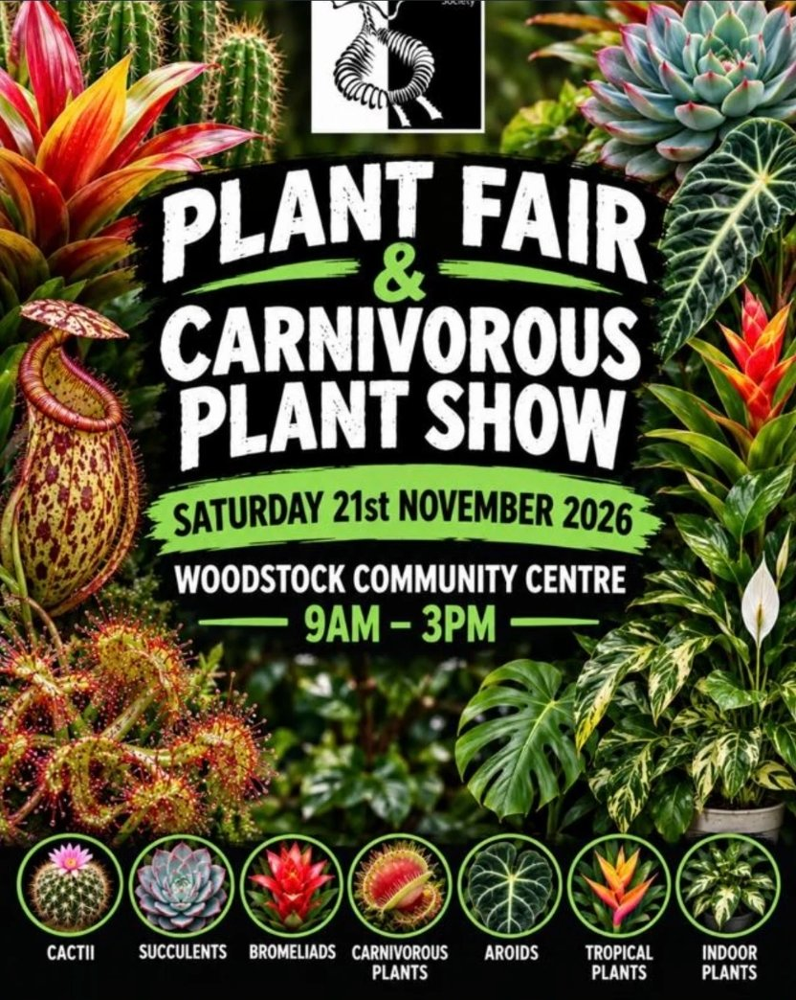

公益推荐 · 社区活动
Burwood 植物展 🌿
春季植物集市 & 食虫植物展
喜欢养花、种草、收集多肉和奇特植物的朋友，这个周六别错过！除了各种漂亮的观赏植物，还有特别有趣的食虫植物展示，适合全家一起去逛。

海报：AUSCPS（澳大利亚食虫植物协会）官方 Instagram @auscps
活动信息
现场植物
- 🌵 仙人掌Cacti
- 🪴 多肉植物Succulents
- 🌺 凤梨科植物Bromeliads
- 🪰 食虫植物Carnivorous Plants：猪笼草、瓶子草、茅膏菜等
- 🍃 天南星科植物Aroids
- 🌴 热带植物Tropical Plants
- 🌿 室内观叶植物Indoor Plants
温馨提示
🛍️ 现场有植物出售，建议带环保袋或小纸箱，方便把植物带回家。
⏰ 结束时间以海报为准（下午 3 点），去晚了好植物可能已经卖完，建议早点去。
说明：本活动由 AUSCPS 主办，Grace Rock 只做公益推荐，不收取任何费用。活动详情以主办方公布为准。